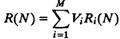
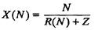

| Previous | Table of Contents | Next |
Mean-Value Analysis (MVA) allows solving closed queueing networks in a manner similar to that used for open queueing networks in Section 34.1. As the name implies, it gives the mean performance. The variance computation is not possible using this technique. Mean-value analysis applies to networks with a variety of service disciplines and service time distributions. However, we will initially limit our discussion here to fixed-capacity service centers. Delay centers are considered later in this section. Load-dependent service centers are considered in Section 36.1.
Given a closed queueing network with N jobs, Reiser and Lavenberg (1980) showed that the response time of the ith device is given by
| Ri(N) = Si[1 + Qi(N – 1)] | (34.3) |
Here, Qi(N – 1) is the mean queue length at the ith device with N – 1 jobs in the network. Notice the similarity between this equation and Equation (34.1) for open queueing networks. As before, one way to explain this equation is to consider what happens when we add a tagged Nth job to the network with N – 1 jobs. On arrival at the ith service center, the tagged job sees Qi (N – 1) jobs ahead (including the one in service) and expects to wait Qi(N – 1)Si seconds before receiving service. Including the service time for itself, the job should expect a total response time of Si[1 + Qi (N – 1)].
It should be pointed out that Equation (34.3) is not an operational law. It assumes that the service is memoryless, an assumption that is not operationally testable.
Given the performance for N – 1 users, Equation (34.3), along with the operation laws discussed earlier in Chapter 33, is sufficient to allow us to compute the performance for N users. Since the performance with no users (N = 0) can be easily computed, performance for any number of users can be computed iteratively, as we show next.
Given the response times at individual devices, the system response time using the general response time law is

The system throughput using the interactive response time law is
|  | (34.4) |
The device throughputs measured in terms of jobs per second are
| Xi(N) = X(N)Vi | (34.5) |
The device queue lengths with N jobs in the network using Little’s law are
| Qi(N) = Xi(N)Ri(N) = X(N)ViRi(N) | (34.6) |
The equations developed so far assumed all devices to be fixed-capacity queueing centers. If a device is a delay center (infinite servers), there is no waiting before service, and therefore, the response time is equal to the service time regardless of the queue length. As discussed earlier in Section 33.5, the queue length in this case denotes the number of jobs receiving service. Thus, the response time equation for delay centers is simply
| Ri(N) = Si | (34.7) |
|
Equations (34.5) and (34.6) for device throughputs and queue lengths apply to delay centers as well.
Equations (34.3) to (34.7) define one iteration of MWA. The procedure is initialized for N = 0 users as follows:
Qi(0) = 0
The complete procedure is described in Box 34.2.
The system parameters are
SA = 0.3, VA = 10⇒ DA = 3
SB = 0.2, VB = 5 ⇒ DB = 1
DCPU = 2, VCPU = VA + VB + 1 = 16 ⇒ SCPU = 0.125
Z = 4, N = 20
Initialization:
Number of users: N = 0
Device queue lengths: QCPU = 0, QA = 0, QB = 0
Iteration 1
Number of users: N = 1
Device response times:
RCPU = SCPU(1 + QCPU) = 0.125(1 + 0) = 0.125
RA = SA(1 + QA) = 0.3(1 + 0) = 0.3
RB = SB(1 + QB) = 0.2(1 + 0) = 0.2
System response time:
R = RCPUVCPU + RAVB + RAVB = 0.125 × 16 + 0.3 × 10 + 0.2 × 5 = 6
| Previous | Table of Contents | Next |